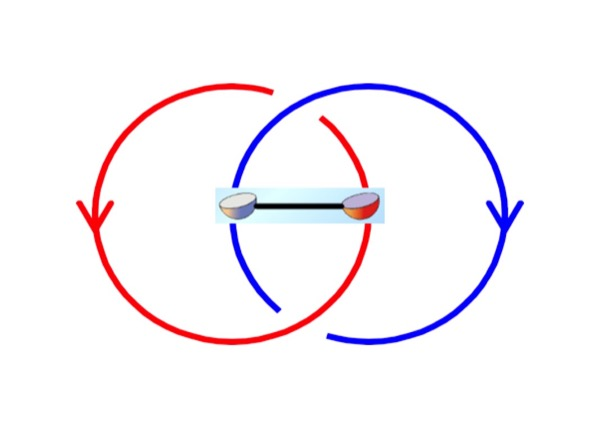
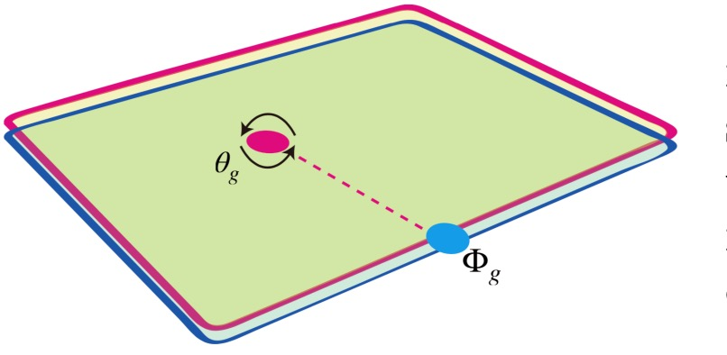
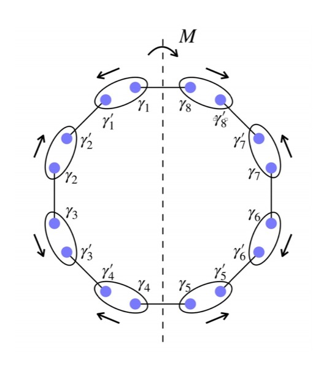
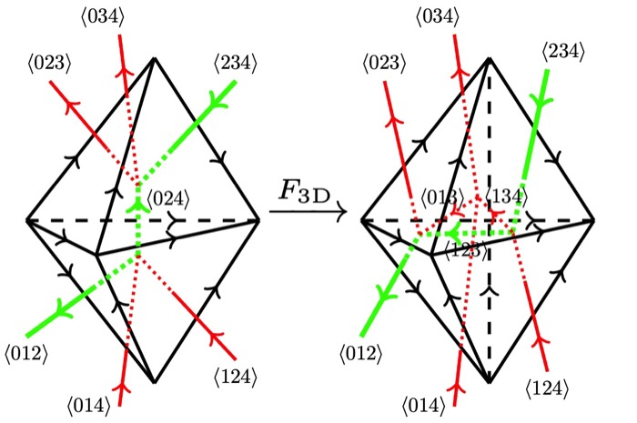
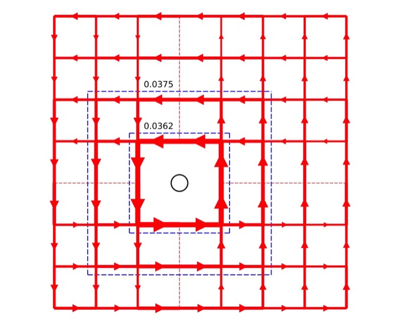
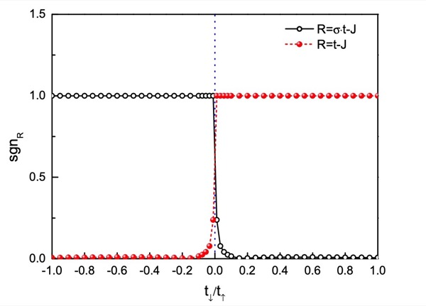
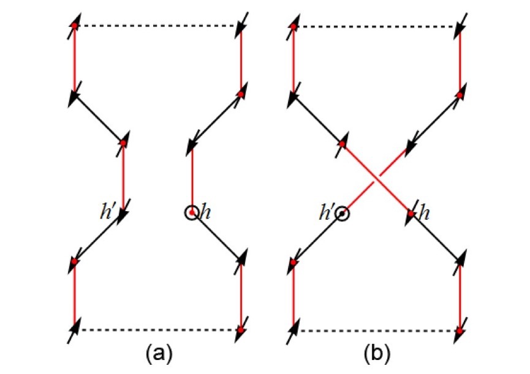
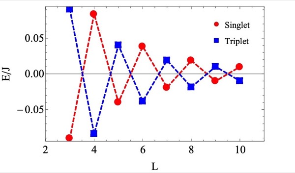
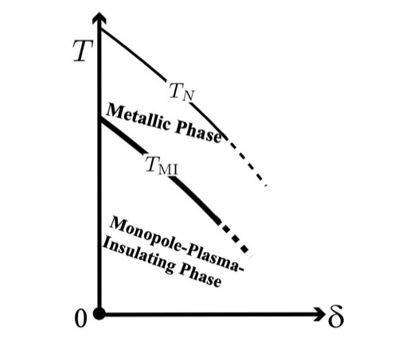

You can also find my publications and preprints at google scholar, research gate, or arXiv.
1. Description and characterization of general topological phases
2. Construction and classification of fermionic symmetry-protected topological (SPT) phases
3. Symmetry-enriched topological (SET) phases
4. Sign structure in doped Mott insulator
Qing-Rui Wang, Shang-Qiang Ning, and Meng Cheng
In this work, we showed basically ''domain wall decorations (in physics) = Atiyah-Hirzebruch spectral sequence (in math)''. For the bosonic topological phases described by group cohomology, we also derived all the differentials at the cochain level in the Lyndon-Hochschild-Serre spectral sequence. It can be used to unify the anomaly formulas for bosonic topological phases (such as SPT-LSM theorems, anomalous SPT phases, and symmetry-enriched gauge theories). Using Lyndon's algorithm (implemented by this Mathematica code), we listed explicit cochains to extract different domain-wall-decoration data for a given cocycle in some low degrees.

Yunqing Ouyang, Qing-Rui Wang, Zheng-Cheng Gu, and Yang Qi
Using techniques from homological algebra, we developed an algorithm to calculate the topological invariants for a given cocycle of a group. It can be used to accelerate the computation of obstructions (anomalies) for SPT or SET phases. For instance, the classifications of 2D fermion SPT protected by 17 2D wallpaper groups are calculated using this algorithm.

Jing-Ren Zhou, Qing-Rui Wang, Chenjie Wang, and Zheng-Cheng Gu
Nat. Commun. 12, 3191 (2021), arXiv: 1912.13505 (2019)
We proposed and solved the physical constraints for loop braiding statistics in 3+1D fermionic topological phases. Even for Abelian gauge symmetries, the loop braidings could be non-Abelian. The classification of fermionic Abelian SPT phases from the braiding statistics approach is consistent with that of the general group supercohomology theory (see [17a] and [18c] below).

Qing-Rui Wang, Meng Cheng, Chenjie Wang, and Zheng-Cheng Gu
Phys. Rev. B 99, 235137 (2019), arXiv: 1810.13428 (2018)
The loop-like excitation in 3+1D may obey the so-called three-loop-braiding statistics. In this paper, we established a TQFT framework to understand the quantum statistics of point-like particles and loop-like excitations in 3+1D for Abelian topological phases.

Shang-Qiang Ning, Chenjie Wang, Qing-Rui Wang, and Zheng-Cheng Gu
We utilize the Abelian Chern-Simons theory to study the fermionic SPT phases protected by Abelian symmetry. In particular, we discover the construction of Luttinger liquid edge theories with central charge n−1 for Type-III bosonic SPT phases protected by \((\mathbb Z_n)^3\) symmetry.

Jian-Hao Zhang, Qing-Rui Wang, Shuo Yang, Yang Qi, and Zheng-Cheng Gu
Phys. Rev. B 101, 100501(R) (2020), arXiv: 1909.05519 (2019)
We constructed and classified point-group SPT phases for 2D interacting fermion systems via lower-dimensional block-state decorations. The crystalline equivalence principle was verified in 2D interacting fermion systems, with spinless and spin-1/2 group extensions switched.

Qing-Rui Wang and Zheng-Cheng Gu
Phys. Rev. X 10, 031055 (2020), arXiv: 1811.00536 (2018)
We gave a systematic fixed-point wave function construction and classification of fermionic SPT states for generic fermionic symmetry group \(G_f = \mathbb Z_2^f ×_{\omega_2} G_b\), which is a central extension of bosonic symmetry group Gb (may contain time reversal symmetry) by the fermion parity symmetry group \(\mathbb Z_2^f=\{1,P_f\}\). There are in total 4 layers of decoration data: 2+1D \(p+ip\) superconductors, 1+1D Majorana chain, 0+1D complex fermion, and bosonic SPT. This is an all-inclusive classification work on fermionic SPT with finite onsite symmetry.

Qing-Rui Wang, Yang Qi, and Zheng-Cheng Gu
Phys. Rev. Lett. 123, 207003 (2019), arXiv: 1810.12899 (2018)
To our surprise, there exists a new class of the so-called anomalous SPT (ASPT) states which are only well defined on the boundary of a trivial fermionic bulk system. We demonstrated the essential idea by considering an anomalous topological superconductor with time-reversal symmetry \(T^2=1\) in 2D. The ASPT states are also crucial in the classification of fermionic SPT phases in one dimension higher, known as trivialization.

Qing-Rui Wang and Zheng-Cheng Gu
Phys. Rev. X 8, 011055 (2018), arXiv: 1703.10937 (2017)
We established a relation between discrete spin structure (the Poincaré dual of the trivialization of the 2nd Stiefel-Whitney class \(w_2\)) and local Kasteleyn orientations on the dual lattice for arbitrary triangulations in arbitrary dimensions. The Majorana chains are then decorated to the intersection lines of domain walls to give rise to a new class of fermionic SPT phases.

Qing-Rui Wang and Meng Cheng
We proposed general constructions of commuting-projector lattice models for 2D Levin-Wen, 3D Walker-Wang, and 3D Dijkgraaf-Witten topological orders enriched by U(1) symmetry, with finite-dimensional Hilbert space per site. The point-like or loop-like excitations are shown to carry fractional U(1) charges.

Shuai Chen, Qing-Rui Wang, Yang Qi, D. N. Sheng, and Zheng-Yu Weng
Phys. Rev. B 99, 205128 (2019), arXiv: 1812.05627 (2018)
Using the variational Monte Carlo method, we studied a ground-state ansatz for the single-hole doped t-J model in two dimensions. Such a single-hole wave function possesses finite angular momenta generated by hidden spin currents, which give rise to a novel ground state degeneracy in agreement with recent exact diagonalization (ED) and density matrix renormalization group (DMGR) results.

Zheng Zhu, Qing-Rui Wang, D. N. Sheng, and Zheng-Yu Weng
Nucl. Phys. B 903, 51 (2016), arXiv: 1510.07634 (2015)
We proposed a single-hole-doped ground state ansatz with the correct sign structure of the 1D t-J model (see [13a] below). The Monte Carlo simulations of this variational wave function reproduced the key DMRG results of the model (such as the characteristic momentum structure, the Luttinger liquid behavior, and the quantum phase interference of the hole under a periodic boundary condition).

Qing-Rui Wang, Zheng Zhu, Yang Qi, and Zheng-Yu Weng
Based on three general guiding principles, i.e., no double occupancy constraint, accurate description of antiferromagnetism at half-filling, and the precise sign structure of the t-J model, a new ground state wave function has been constructed in [Weng, New J. Phys. 13, 103039 (2011)]. This paper specifically studied such kind of variational ground state ansatz for the one-hole-doped anisotropic two-leg t-J ladder using the variational Monte Carlo (VMC) method. An excellent agreement is found between the VMC and DMRG results.

Qing-Rui Wang and Peng Ye
Phys. Rev. B 90, 045106 (2014), arXiv: 1310.6496 (2013)
We showed that the 1D t-J chain has an exact sign structure captured by the Marshall sign and the phase string sign. Using this sign structure, we proved a generalized Marshall theorem and a generalized Lieb-Mattis theorem for the t-J chain with arbitrary spin and doping. The large t/J phase supports a gapped spin sector with similar properties (ground-state degeneracy, edge state, and string order parameter) of the Haldane chain (a 1D SO(3) SPT), although the charge sector is gapless. This may be the first example of SPT in gapless systems.

Peng Ye and Qing-Rui Wang
Nucl. Phys. B 874, 386 (2013), arXiv: 1206.0258 (2012)
We present a quantum field theoretic description on the t-J model on a square lattice with dilute holes (i.e. near half-filling), based on the compact mutual Chern-Simons gauge theory. Due to the presence of non-perturbative monopole plasma configuration from the antiferromagnetic background, holons (carrying electric charge) are linearly confined and strongly localized even without extrinsic disorder taken into account.